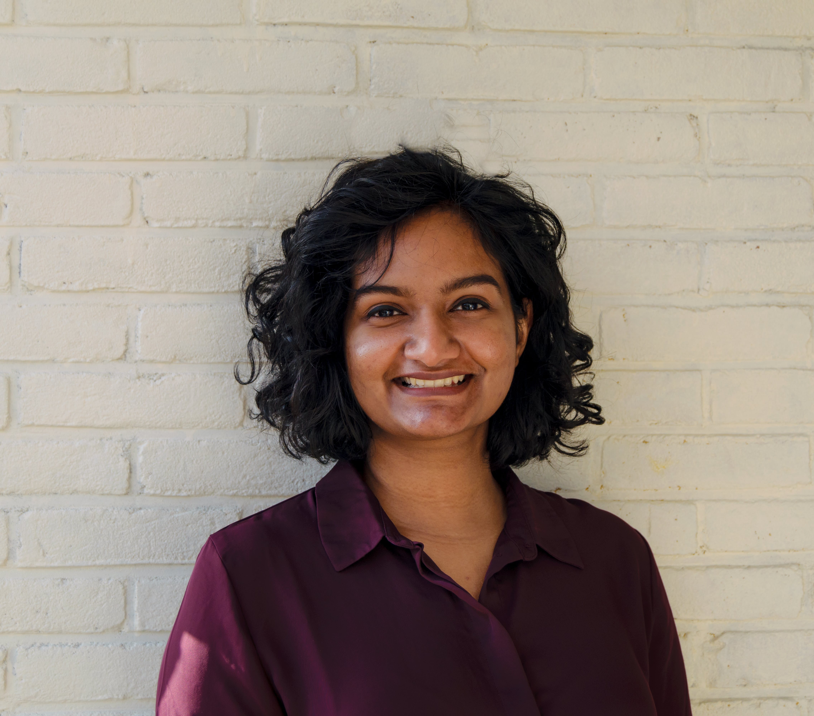

Ammu Joshy
Data Analyst | Critical Thinker | Problem Solver
Researcher with 3 years of expertise and a Master's degree in engineering and philosophy. Demonstrates strong problem-solving and critical-thinking abilities. Approachable and open-minded, with excellent analytical skills when navigating and understanding different perspectives. Hands-on, driven, and highly motivated individual with curiosity about understanding end-to-end processes, the data that fuels them, and the insights they generate.
Skills
Soft Skills
- Analytical Thinking
- Communication
- Attention to Detail
- Team Collaboration
- Adaptability
- Continuous Learning
Technical Skills
- Intermediate: SQL, Excel, Tableau
- Basics: Python, HTML, CSS
Experience
Research Associate | High Performance Computing Center, Stuttgart
April 2021 - July 2023 & May 2024 - Nov 2024- Conducted a 27-month research project in Trust in Medical systems.
- Produced annual reports for Ministerium für Wissenschaft, Forschung und Kunst Baden-Württemberg (MWK) and conference papers based on research findings.
- Organized and moderated conferences, workshops, summer schools, and lecture series focused on trust in science, disinformation, ethics, and AI assessment.
- Created a WordPress website within a 3-month timeframe to facilitate interdisciplinary discussions on trust in information.
- Reviewed and edited academic submissions from external authors to ensure publication quality.
Education
Data Analytics | Turing College
OngoingMSc. Philosophy of Science, Technology and Society | University of Twente, The Netherlands
Graduated: 2018MSc. Systems & Control | University of Twente, The Netherlands
Graduated: 2016B.Tech Instrumentation & Control Engineering | Manipal Institute of Technology, India
Graduated: 2015- © 2024 Ammu Joshy
- Designed using the HTML5 UP template